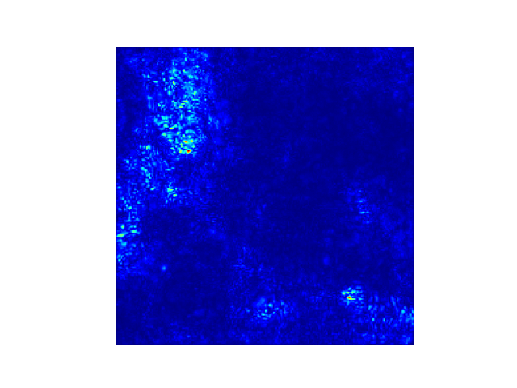
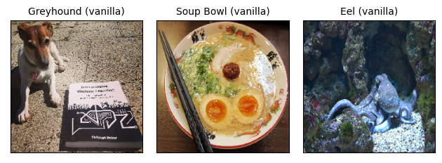
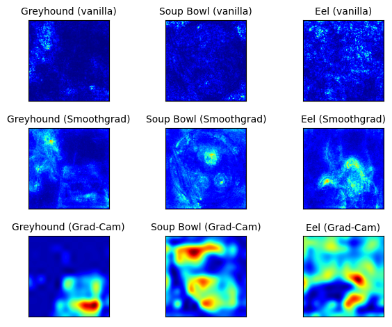

En cours de traduction.
10.2 - Attribution de pixel
Les méthodes d’attribution de pixels mettent en évidence les pixels qui étaient pertinents pour une certaine classification d’image par un réseau neuronal. L’image suivante est un exemple d’explication :

Les méthodes d’attribution de pixels mettent en lumière les pixels qui ont été pertinents pour une certaine classification d’image effectuée par un réseau neuronal. Vous verrez plus tard dans ce chapitre ce qui se passe dans cette image particulière. Les méthodes d’attribution de pixels peuvent être trouvées sous divers noms : carte de sensibilité, carte de saillance, carte d’attribution de pixels, méthodes d’attribution basées sur les gradients, pertinence des caractéristiques, attribution des caractéristiques et contribution des caractéristiques.
L’attribution de pixels est un cas particulier de l’attribution de caractéristiques, mais pour les images. L’attribution de caractéristiques explique les prédictions individuelles en attribuant chaque caractéristique d’entrée selon la mesure dans laquelle elle a changé la prédiction (négativement ou positivement). Les caractéristiques peuvent être des pixels d’entrée, des données tabulaires ou des mots. SHAP, les valeurs de Shapley et LIME sont des exemples de méthodes d’attribution de caractéristiques générales.
Nous considérons les réseaux neuronaux qui produisent en sortie un vecteur de longueur \(C\), ce qui inclut la régression où \(C=1\). La sortie du réseau neuronal pour l’image \(I\) est appelée \(S(I)=[S_1(I),\ldots,S_C(I)]\). Toutes ces méthodes prennent en entrée \(x\in\mathbb{R}^p\) (peuvent être des pixels d’image, des données tabulaires, des mots, …) avec \(p\) caractéristiques et produisent en sortie un score de pertinence pour chacune des \(p\) caractéristiques d’entrée : \(R^c=[R_1^c,\ldots,R_p^c]\). Le \(c\) indique la pertinence pour la \(c^{ième}\) sortie \(S_C(I)\).
Il existe une quantité déroutante d’approches d’attribution de pixels. Il est utile de comprendre qu’il existe deux types différents de méthodes d’attribution :
Basées sur l’occlusion ou la perturbation : Des méthodes comme SHAP et LIME manipulent des parties de l’image pour générer des explications (agnostiques au modèle).
Basées sur le gradient : De nombreuses méthodes calculent le gradient de la prédiction (ou du score de classification) par rapport aux caractéristiques d’entrée. Les méthodes basées sur le gradient (dont il en existe beaucoup) diffèrent principalement dans la manière dont le gradient est calculé.
Les deux approches ont en commun que l’explication a la même taille que l’image d’entrée (ou peut au moins être projetée de manière significative sur celle-ci) et elles attribuent à chaque pixel une valeur qui peut être interprétée comme la pertinence du pixel pour la prédiction ou la classification de cette image.
Une autre catégorisation utile pour les méthodes d’attribution de pixels est la question de base :
Les méthodes basées uniquement sur le gradient nous indiquent si un changement dans un pixel changerait la prédiction. Des exemples sont le Gradient Vanille et Grad-CAM. L’interprétation de l’attribution basée uniquement sur le gradient est : si j’augmentais les valeurs de couleur du pixel, la probabilité de la classe prédite augmenterait (pour un gradient positif) ou diminuerait (pour un gradient négatif). Plus la valeur absolue du gradient est grande, plus l’effet d’un changement de ce pixel est fort.
Les méthodes d’attribution de chemin comparent l’image actuelle à une image de référence, qui peut être une image “zéro” artificielle comme une image complètement grise. La différence entre la prédiction actuelle et la prédiction de base est répartie parmi les pixels. L’image de référence peut également être multiple : une distribution d’images. Cette catégorie comprend des méthodes basées sur le gradient spécifiques au modèle comme Deep Taylor et Integrated Gradients, ainsi que des méthodes agnostiques au modèle telles que LIME et SHAP. Certaines méthodes d’attribution de chemin sont “complètes”, ce qui signifie que la somme des scores de pertinence pour toutes les caractéristiques d’entrée est la différence entre la prédiction de l’image et la prédiction d’une image de référence. Des exemples sont SHAP et Integrated Gradients. Pour les méthodes d’attribution de chemin, l’interprétation se fait toujours par rapport à la référence : la différence entre les scores de classification de l’image actuelle et de l’image de référence est attribuée aux pixels. Le choix de l’image de référence (distribution) a un grand effet sur l’explication. L’hypothèse habituelle est d’utiliser une image (distribution) “neutre”. Bien sûr, il est parfaitement possible d’utiliser votre selfie préféré, mais vous devriez vous demander si cela a du sens dans une application. Cela affirmerait certainement la domination parmi les autres membres du projet.
À ce stade, je donnerais normalement une explication intuitive de la manière dont ces méthodes fonctionnent, mais je pense qu’il est préférable de commencer directement par la méthode du Gradient Vanille, car elle montre très bien la recette générale que de nombreuses autres méthodes suivent.
10.2.1 - Gradient Vanille (Cartes de saillance)
L’idée du Gradient Vanille, introduite par Simonyan et al. (2013)1 en tant que l’une des premières approches d’attribution de pixels, est assez simple si vous connaissez déjà la rétropropagation. (Ils ont appelé leur approche “Saliency Image-Specific Class”, mais je préfère Gradient Vanille). Nous calculons le gradient de la fonction de perte pour la classe qui nous intéresse par rapport aux pixels d’entrée. Cela nous donne une carte de la taille des caractéristiques d’entrée avec des valeurs négatives à positives.
La recette pour cette approche est :
- Effectuer un passage en avant de l’image d’intérêt.
- Calculer le gradient du score de classe d’intérêt par rapport aux pixels d’entrée : \[E_{grad}(I_0)=\frac{\delta{}S_c}{\delta{}I}|_{I=I_0}\] Ici, nous fixons toutes les autres classes à zéro.
- Visualiser les gradients. Vous pouvez soit montrer les valeurs absolues, soit mettre en évidence séparément les contributions négatives et positives.
Plus formellement, nous avons une image I et le réseau neuronal convolutionnel lui donne un score \(S_c(I)\) pour la classe c. Le score est une fonction hautement non linéaire de notre image. L’idée derrière l’utilisation du gradient est que nous pouvons approximer ce score en appliquant une expansion de Taylor du premier ordre
\[S_c(I)\approx{}w^T{}I+b\]
où w est la dérivée de notre score :
\[w = \frac{\delta S_C}{\delta I}|_{I_0}\]
Maintenant, il y a une certaine ambiguïté sur la manière d’effectuer un passage en arrière des gradients, car des unités non linéaires telles que ReLU (Rectifying Linear Unit) “suppriment” le signe. Donc, lorsque nous faisons un passage en arrière, nous ne savons pas s’il faut attribuer une activation positive ou négative. Utilisant mes incroyables compétences en art ASCII, la fonction ReLU ressemble à ceci : _/ et est définie comme \(X_{n+1}(x)=max(0,X_n)\) de la couche \(X_n\) à la couche \(X_{n-1}\). Cela signifie que lorsque l’activation d’un neurone est nulle, nous ne savons pas quelle valeur rétropropager. Dans le cas du Gradient Vanille, l’ambiguïté est résolue comme suit :
\[\frac{\delta f}{\delta X_n} = \frac{\delta f}{\delta X_{n+1}} \cdot \mathbf{I}(X_n > 0)\]
Ici, \(\mathbf{I}\) est la fonction indicatrice élément par élément, qui est zéro là où l’activation à la couche inférieure était négative, et un où elle est positive ou nulle. Le Gradient Vanille prend le gradient que nous avons rétropropagé jusqu’à présent jusqu’à la couche \(n+1\), puis fixe simplement les gradients à zéro où l’activation à la couche en dessous est négative.
Regardons un exemple où nous avons les couches \(X_n\) et \(X_{n+1}=\text{ReLU}(X_{n+1})\). Notre activation fictive à \(X_n\) est :
\[ \begin{pmatrix} 1 & 0 \\ -1 & -10 \\ \end{pmatrix} \]
Et voici nos gradients à \(X_{(n+1)}\) :
\[ \begin{pmatrix} 0,4 & 1,1 \\ -0,5 & -0,1 \\ \end{pmatrix} \]
Alors nos gradients à \(X_n\) sont :
\[ \begin{pmatrix} 0,4 & 0 \\ 0 & 0 \\ \end{pmatrix} \]
10.2.1.1 - Les problèmes avec Vanilla Gradient
Le Gradient Vanille a un problème de saturation, comme expliqué dans Avanti et al. (2017)2. Lorsque ReLU est utilisé, et lorsque l’activation passe en dessous de zéro, alors l’activation est plafonnée à zéro et ne change plus. L’activation est saturée. Par exemple : l’entrée de la couche est deux neurones avec des poids \(-1\) et \(-1\) et un biais de \(1\). Lors du passage à travers la couche ReLU, l’activation sera \(neuron_1\) + \(neuron_2\) si la somme des deux neurones est inférieure strictement à \(1\).Si la somme des deux est supérieure à \(1\), l’activation restera saturée à une activation de \(1\). Aussi, le gradient à ce point sera zéro, et le Gradient Vanille dira que ce neurone n’est pas important.
Vérifier et illustrer l’exemple précédent
Et maintenant, mes chers lecteurs, apprenez une autre méthode, plus ou moins gratuitement : DeconvNet.
10.2.2 - DeconvNet
DeconvNet par Zeiler et Fergus (2014)3 est presque identique au Gradient Vanille. L’objectif de DeconvNet est d’inverser un réseau neuronal et l’article propose des opérations qui sont des inverses des couches de filtrage, de pooling et d’activation. Si vous regardez dans l’article, cela semble très différent du Gradient Vanille, mais à part l’inversion de la couche ReLU, DeconvNet est équivalent à l’approche du Gradient Vanille. Le Gradient Vanille peut être considéré comme une généralisation de DeconvNet. DeconvNet fait un choix différent pour rétropropager le gradient à travers ReLU :
\[R_n = R_{n+1}\mathbb{I}(R_{n+1} > 0)\]
où \(R_n\) et \(R_{n+1}\) sont les reconstructions des couches et \(\mathbb{I}\) la fonction indicatrice. Lors de la rétropropagation de la couche \(n\) à la couche \(n-1\), DeconvNet “se souvient” des activations dans la couche \(n\) qui ont été mises à zéro lors du passage en avant et les met à zéro dans la couche \(n-1\). Les activations ayant une valeur négative dans la couche \(n\) sont mises à zéro dans la couche \(n-1\). Le gradient \(X_n\) pour l’exemple précédent devient :
Vérifier et illustrer l’exemple précédent
\[ \begin{pmatrix} 0,4 & 1,1 \\ 0 & 0 \\ \end{pmatrix} \]
10.2.3 - Grad-CAM
Grad-CAM fournit des explications visuelles pour les décisions prises par les CNN (réseaux de neurones convolutionnels). Contrairement à d’autres méthodes, le gradient n’est pas rétropropagé jusqu’à l’image, mais (généralement) jusqu’à la dernière couche convolutionnelle pour produire une carte de localisation grossière qui met en évidence les régions importantes de l’image.
Grad-CAM signifie Gradient-weighted Class Activation Map (Carte d’Activation de Classe Pondérée par Gradient). Et, comme son nom l’indique, il est basé sur le gradient des réseaux neuronaux. Grad-CAM, comme d’autres techniques, attribue à chaque neurone un score de pertinence pour la décision d’intérêt. Cette décision d’intérêt peut être la prédiction de classe (que nous trouvons dans la couche de sortie), mais peut théoriquement être n’importe quelle autre couche dans le réseau neuronal. Grad-CAM rétropropage cette information à la dernière couche convolutionnelle. Grad-CAM peut être utilisé avec différents CNNs : avec des couches entièrement connectées, pour des sorties structurées telles que le sous-titrage et dans des sorties multi-tâches, et pour l’apprentissage par renforcement.
Commençons par une considération intuitive de Grad-CAM. L’objectif de Grad-CAM est de comprendre sur quelles parties d’une image une couche convolutionnelle “regarde” pour une certaine classification. Pour rappel, la première couche convolutionnelle d’un CNN prend en entrée les images et produit des cartes de caractéristiques qui encodent les caractéristiques apprises (voir la section sur les caractéristiques apprises). Les couches convolutionnelles de niveau supérieur font de même, mais prennent en entrée les cartes de caractéristiques des couches convolutionnelles précédentes. Pour comprendre comment le CNN prend des décisions, Grad-CAM analyse quelles régions sont activées dans les cartes de caractéristiques des dernières couches convolutionnelles. Il y a \(k\) cartes de caractéristiques dans la dernière couche convolutionnelle, et je vais les appeler \(A_1, A_2, \ldots, A_k\). Comment pouvons-nous “voir” à partir des cartes de caractéristiques comment le réseau neuronal convolutionnel a effectué une certaine classification ? Dans la première approche, nous pourrions simplement visualiser les valeurs brutes de chaque carte de caractéristiques, faire une moyenne sur les cartes de caractéristiques et superposer cela sur notre image. Cela ne serait pas utile car les cartes de caractéristiques encodent des informations pour toutes les classes, mais nous sommes intéressés par une classe particulière. Grad-CAM doit décider de l’importance de chacune des \(k\) cartes de caractéristiques pour notre classe c qui nous intéresse. Nous devons pondérer chaque pixel de chaque carte de caractéristiques avec le gradient avant de faire une moyenne sur les cartes de caractéristiques. Cela nous donne une carte thermique qui met en évidence les régions qui affectent positivement ou négativement la classe d’intérêt. Cette carte thermique est passée à travers la fonction ReLU, ce qui est une façon élégante de dire que nous fixons toutes les valeurs négatives à zéro. Grad-CAM élimine toutes les valeurs négatives en utilisant une fonction ReLU, avec l’argument que nous sommes uniquement intéressés par les parties qui contribuent à la classe sélectionnée c et non à d’autres classes. Le mot pixel pourrait être trompeur ici car la carte de caractéristiques est plus petite que l’image (à cause des unités de pooling) mais est mappée sur l’image originale. Nous échelonnons ensuite la carte Grad-CAM à l’intervalle \([0,1]\) à des fins de visualisation et la superposons sur l’image originale.
Regardons la recette pour Grad-CAM. Notre objectif est de trouver la carte de localisation, qui est définie comme suit :
\[L^c_{Grad-CAM} \in \mathbb{R}^{u\times v} = \underbrace{\text{ReLU}}_{\text{Choisir valeurs positives}}\left(\sum_{k} \alpha_k^c A^k\right)\]
Ici, \(u\) est la largeur, \(v\) la hauteur de l’explication et \(c\) la classe d’intérêt.
- Propager en avant l’image d’entrée à travers le réseau neuronal convolutionnel.
- Obtenir le score brut pour la classe d’intérêt, c’est-à-dire l’activation du neurone avant la couche softmax.
- Définir toutes les autres activations de classe à zéro.
- Rétropropager le gradient de la classe d’intérêt vers la dernière couche convolutionnelle avant les couches entièrement connectées : ().
- Ponderer chaque “pixel” de la carte de caractéristiques par le gradient pour la classe. Les indices i et j se réfèrent aux dimensions de largeur et de hauteur : \[\alpha_k^c = \overbrace{\frac{1}{Z}\sum_{i}\sum_{j}}^{\text{pooling moyen global}} \underbrace{\frac{\delta y^c}{\delta A_{ij}^k}}_{\text{gradients via rétropropagation}}\] Cela signifie que les gradients sont mis en commun de manière globale.
- Calculer une moyenne des cartes de caractéristiques, pondérée par pixel par le gradient.
- Appliquer ReLU à la carte de caractéristiques moyennée.
- Pour la visualisation : Échelonner les valeurs à l’intervalle entre \(0\) et \(1\). Agrandir l’image et la superposer sur l’image originale.
- Étape supplémentaire pour Guided Grad-CAM : Multiplier la carte thermique avec la rétropropagation guidée.
10.2.4 - Guided Grad-CAM
D’après la description de Grad-CAM, vous pouvez deviner que la localisation est très grossière, car les dernières cartes de caractéristiques convolutionnelles ont une résolution beaucoup plus grossière par rapport à l’image d’entrée. En revanche, d’autres techniques d’attribution rétropropagent jusqu’aux pixels d’entrée. Elles sont donc beaucoup plus détaillées et peuvent vous montrer des bords ou des points individuels qui ont le plus contribué à une prédiction. Une fusion de ces deux méthodes est appelée Guided Grad-CAM. Et c’est super simple. Vous calculez pour une image à la fois l’explication Grad-CAM et l’explication d’une autre méthode d’attribution, telle que le Gradient Vanille. La sortie Grad-CAM est ensuite agrandie avec une interpolation bilinéaire, puis les deux cartes sont multipliées élément par élément. Grad-CAM fonctionne comme une lentille qui se concentre sur des parties spécifiques de la carte d’attribution pixel par pixel.
10.2.5 - SmoothGrad
L’idée de SmoothGrad par Smilkov et al. (2017)4 est de rendre les explications basées sur les gradients moins bruyantes en ajoutant du bruit et en moyennant ces gradients artificiellement bruyants. SmoothGrad n’est pas une méthode d’explication autonome, mais une extension à toute méthode d’explication basée sur les gradients.
SmoothGrad fonctionne de la manière suivante :
- Générer plusieurs versions de l’image d’intérêt en y ajoutant du bruit.
- Créer des cartes d’attribution de pixels pour toutes les images.
- Moyenner les cartes d’attribution de pixels.
Oui, c’est aussi simple que ça. Pourquoi cela devrait-il fonctionner ? La théorie est que la dérivée fluctue grandement à petite échelle. Les réseaux neuronaux n’ont aucune incitation, lors de l’entraînement, à maintenir les gradients lisses, leur objectif est de classer correctement les images. Moyenner plusieurs cartes “lisse” ces fluctuations :
\[R_{sg}(x) = \frac{1}{N} \sum_{i=1}^n R(x + g_i)\]
Ici, \(g_i \sim N(0,\sigma^2)\) sont des vecteurs de bruit échantillonnés à partir de la distribution gaussienne. Le niveau de bruit “idéal” dépend de l’image d’entrée et du réseau. Les auteurs suggèrent un niveau de bruit de \(10%\) à \(20%\), ce qui signifie que \(\frac{\sigma}{x_{max} - x_{min}}\) devrait être entre \(0,1\) et \(0,2\). Les limites \(x_{min}\) et \(x_{max}\) se réfèrent aux valeurs de pixels minimales et maximales de l’image. L’autre paramètre est le nombre d’échantillons n, pour lequel il a été suggéré d’utiliser \(n = 50\), car il y a des rendements décroissants au-delà de cela.
10.2.6 - Exemples
Voyons quelques exemples de l’apparence de ces cartes et comment les méthodes se comparent qualitativement. Le réseau examiné est VGG-16 (Simonyan et al. 20145) qui a été entraîné sur ImageNet et peut donc distinguer plus de 20 000 classes. Pour les images suivantes, nous créerons des explications pour la classe ayant le score de classification le plus élevé.
Voici les images et leur classification par le réseau neuronal :

L’image à gauche avec le chien honorable gardant le livre “Interpretable Machine Learning” a été classifiée comme “Lévrier” avec une probabilité de \(35%\) (il semble que “Livre Interpretable Machine Learning” n’était pas l’une des \(20 000\) classes). L’image au milieu montre un bol de délicieuse soupe de ramen et est correctement classifiée comme “Bol de soupe” avec une probabilité de \(50%\). La troisième image montre un poulpe sur le fond de l’océan, qui est incorrectement classifié comme “Anguille” avec une forte probabilité de \(70%\).
Et voici les attributions de pixels qui visent à expliquer la classification :

Malheureusement, c’est un peu confus. Mais examinons les explications individuelles, en commençant par le chien. Le Gradient Vanille et le Gradient Vanille + SmoothGrad mettent tous deux en évidence le chien, ce qui a du sens. Mais ils mettent aussi en évidence certaines zones autour du livre, ce qui est étrange. Grad-CAM met en évidence uniquement la zone du livre, ce qui n’a aucun sens. Et à partir de là, cela devient un peu plus compliqué. La méthode du Gradient Vanille semble échouer pour le bol de soupe et le poulpe (ou, comme le réseau le pense, anguille). Les deux images ressemblent à des images résiduelles de regarder le soleil trop longtemps. (S’il vous plaît, ne regardez pas directement le soleil). SmoothGrad aide beaucoup, au moins les zones sont plus définies. Dans l’exemple de la soupe, certains ingrédients sont mis en évidence, tels que les œufs et la viande, mais aussi la zone autour des baguettes. Dans l’image du poulpe, l’animal lui-même est principalement mis en évidence. Pour le bol de soupe, Grad-CAM met en évidence la partie œuf et, pour une raison quelconque, la partie supérieure du bol. Les explications du poulpe par Grad-CAM sont encore plus désordonnées.
Vous pouvez déjà voir ici les difficultés à évaluer si nous faisons confiance aux explications. Comme première étape, nous devons considérer quelles parties de l’image contiennent des informations pertinentes pour la classification de l’image. Mais ensuite, nous devons aussi réfléchir à ce que le réseau neuronal a pu utiliser pour la classification. Peut-être que le bol de soupe a été correctement classifié en fonction de la combinaison des œufs et des baguettes, comme le suggère SmoothGrad ? Ou peut-être que le réseau neuronal a reconnu la forme du bol plus quelques ingrédients, comme le suggère Grad-CAM ? Nous ne savons tout simplement pas.
Et c’est là le grand problème avec toutes ces méthodes. Nous n’avons pas de vérité absolue pour les explications. Nous ne pouvons que, dans un premier temps, rejeter les explications qui n’ont manifestement aucun sens (et même dans cette étape, nous n’avons pas une grande confiance. Le processus de prédiction dans le réseau neuronal est très compliqué).
10.2.7 - Avantages
Les explications sont visuelles et nous sommes rapides à reconnaître les images. En particulier, lorsque les méthodes mettent en évidence uniquement les pixels importants, il est facile de reconnaître immédiatement les régions importantes de l’image.
Les méthodes basées sur les gradients sont généralement plus rapides à calculer que les méthodes agnostiques au modèle. Par exemple, LIME et SHAP peuvent également être utilisés pour expliquer les classifications d’images, mais sont plus coûteux à calculer.
Il existe de nombreuses méthodes parmi lesquelles choisir.
10.2.8 - Inconvénients
Comme pour la plupart des méthodes d’interprétation, il est difficile de savoir si une explication est correcte, et une grande partie de l’évaluation est uniquement qualitative (« Ces explications semblent correctes, publions l’article tout de suite »).
Les méthodes d’attribution de pixels peuvent être très fragiles. Ghorbani et al. (2019)6 ont montré qu’introduire de petites perturbations (adverses) dans une image, qui conduisent toujours à la même prédiction, peut entraîner la mise en évidence de pixels très différents comme explications.
Kindermans et al. (2019)7 ont également montré que ces méthodes d’attribution de pixels peuvent être hautement peu fiables. Ils ont ajouté un décalage constant aux données d’entrée, c’est-à-dire qu’ils ont ajouté les mêmes changements de pixels à toutes les images. Ils ont comparé deux réseaux, le réseau original et le réseau “décalé” où le biais de la première couche est modifié pour s’adapter au décalage constant des pixels. Les deux réseaux produisent les mêmes prédictions. De plus, le gradient est le même pour les deux. Mais les explications ont changé, ce qui est une propriété indésirable. Ils ont examiné DeepLift, Gradient Vanille et Gradients Intégrés.
L’article “Sanity checks for saliency maps”8 a étudié si les méthodes de salience sont insensibles au modèle et aux données. L’insensibilité est hautement indésirable, car cela signifierait que l’“explication” est sans rapport avec le modèle et les données. Les méthodes insensibles au modèle et aux données d’entraînement sont similaires aux détecteurs de bords. Les détecteurs de bords mettent simplement en évidence des changements de couleur de pixels forts dans les images et sont sans rapport avec un modèle de prédiction ou des caractéristiques abstraites de l’image, et ne nécessitent aucune formation. Les méthodes testées étaient le Gradient Vanille, Gradient x Entrée, Gradients Intégrés, Rétropropagation Guidée, Guided Grad-CAM et SmoothGrad (avec Gradient Vanille). Le Gradient Vanille et Grad-CAM ont passé le test d’insensibilité, tandis que la Rétropropagation Guidée et Guided Grad-CAM ont échoué. Cependant, le papier de vérification de la santé lui-même a trouvé des critiques de Tomsett et al. (2020)9 avec un article appelé “Sanity checks for saliency metrics” (bien sûr). Ils ont trouvé un manque de cohérence pour les métriques d’évaluation (je sais, cela devient assez méta maintenant). Donc, nous revenons là où nous avons commencé… Il reste difficile d’évaluer les explications visuelles. Cela rend très difficile pour un praticien.
Dans l’ensemble, c’est un état de choses très insatisfaisant. Nous devons attendre un peu plus de recherche sur ce sujet. Et s’il vous plaît, pas plus d’invention de nouvelles méthodes de salience, mais plus de rigueur sur la façon de les évaluer.
10.2.9 - Logiciels
Il existe plusieurs implémentations logicielles de méthodes d’attribution de pixels. Pour l’exemple, j’ai utilisé tf-keras-vis. L’une des bibliothèques les plus complètes est iNNvestigate, qui implémente le Gradient Vanille, SmoothGrad, DeconvNet, la Rétropropagation Guidée, PatternNet, LRP et plus encore. Beaucoup de ces méthodes sont implémentées dans la Boîte à Outils DeepExplain.
Notes de bas de page
Simonyan, Karen, Andrea Vedaldi, and Andrew Zisserman. “Deep inside convolutional networks: Visualising image classification models and saliency maps.” arXiv preprint arXiv:1312.6034 (2013).↩︎
Shrikumar, Avanti, Peyton Greenside, and Anshul Kundaje. “Learning important features through propagating activation differences.” Proceedings of the 34th International Conference on Machine Learning-Volume 70. JMLR. org, (2017).↩︎
Zeiler, Matthew D., and Rob Fergus. “Visualizing and understanding convolutional networks.” European conference on computer vision. Springer, Cham (2014).↩︎
Smilkov, Daniel, et al. “SmoothGrad: removing noise by adding noise.” arXiv preprint arXiv:1706.03825 (2017).↩︎
Simonyan, Karen, and Andrew Zisserman. “Very deep convolutional networks for large-scale image recognition.” arXiv preprint arXiv:1409.1556 (2014).↩︎
Ghorbani, Amirata, Abubakar Abid, and James Zou. “Interpretation of neural networks is fragile.” Proceedings of the AAAI Conference on Artificial Intelligence. Vol. 33. 2019.↩︎
Kindermans, Pieter-Jan, Sara Hooker, Julius Adebayo, Maximilian Alber, Kristof T. Schütt, Sven Dähne, Dumitru Erhan, and Been Kim. “The (un) reliability of saliency methods.” In Explainable AI: Interpreting, Explaining and Visualizing Deep Learning, pp. 267-280. Springer, Cham (2019).↩︎
Adebayo, Julius, Justin Gilmer, Michael Muelly, Ian Goodfellow, Moritz Hardt, and Been Kim. “Sanity checks for saliency maps.” arXiv preprint arXiv:1810.03292 (2018).↩︎
Tomsett, Richard, Dan Harborne, Supriyo Chakraborty, Prudhvi Gurram, and Alun Preece. “Sanity checks for saliency metrics.” In Proceedings of the AAAI Conference on Artificial Intelligence, vol. 34, no. 04, pp. 6021-6029. 2020.↩︎